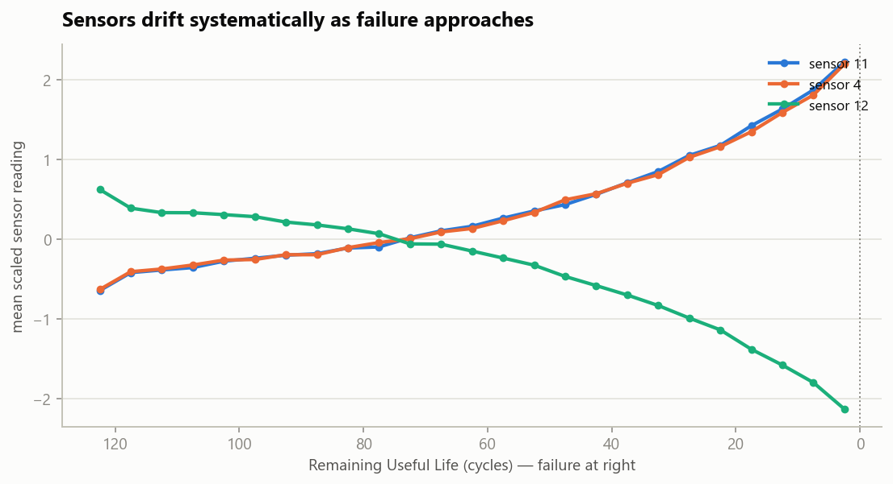
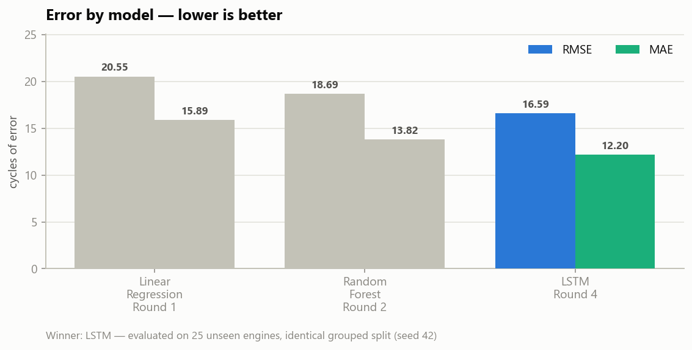
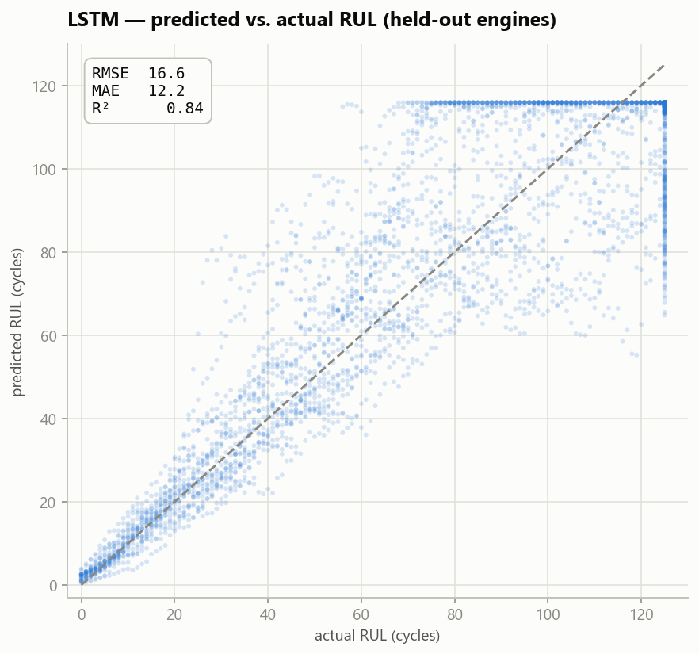
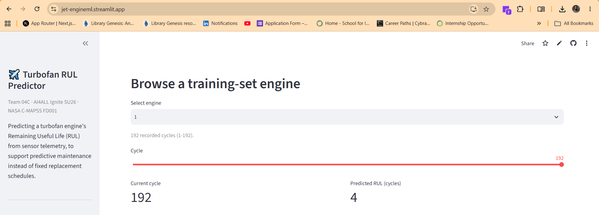

A machine-learning system that reads a turbofan engine's sensor telemetry and predicts its Remaining Useful Life — turning fixed maintenance schedules into smart, condition-based ones.
Powered by an LSTM sequence model & a Random Forest — trained on 100 run-to-failure engines.
Today, jet engines are serviced on fixed schedules — whether they need it or not. That's safe but wasteful: healthy engines get pulled early, and the occasional fast-degrading engine slips through. We ask a simple question:
Maintenance by a one-size-fits-all calendar. Healthy engines are serviced too early, wasting cost and downtime, while risk still isn't fully controlled.
Estimate each engine's Remaining Useful Life from its own sensors, and service it by condition — cutting waste and catching early failures.
“Can machine learning predict early engine failure from sensor telemetry, to support predictive maintenance and reduce unexpected downtime?”
Every engine logs sensor readings each flight cycle until it fails. We learn the degradation pattern with two complementary models and route each prediction to the one that fits the input.

All models were tested fairly, on the same 25 engines they had never seen during training. Shorter bars mean fewer mistakes.


Browse real engines cycle by cycle, upload your own sensor data, or enter readings by hand — and watch the predicted remaining life update in real time.
🚀 Open the App
A group project brought together through the AI4ALL Ignite program — from data analysis to modeling to this deployed dashboard.